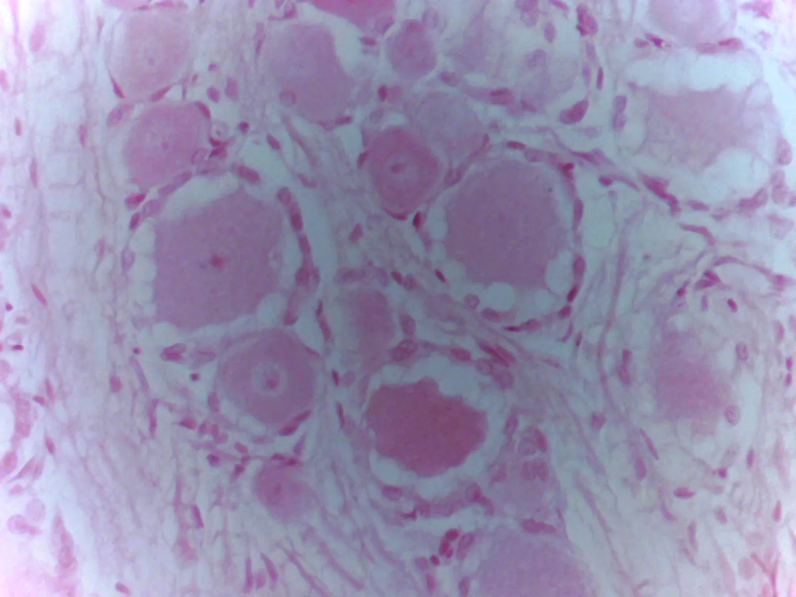

Lâmina 33 · Tecido nervoso
Gânglio espinal

Toque na imagem para ampliar. No computador, use as setas do teclado para trocar de imagem.
Lâmina 33 · Tecido nervoso

Toque na imagem para ampliar. No computador, use as setas do teclado para trocar de imagem.